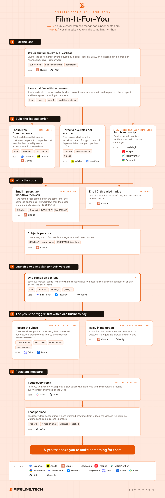

Film-It-For-You
Install the Pipeline.tech "Film-It-For-You" outbound play. Fetch https://raw.githubusercontent.com/pipeline-tech/plays/main/core/SKILL.md and https://raw.githubusercontent.com/pipeline-tech/plays/main/plays/film-it-for-you/SKILL.md, save them as ~/.claude/skills/pipeline-outbound-core/SKILL.md and ~/.claude/skills/pipeline-film-it-for-you/SKILL.md, then run /pipeline-film-it-for-you.

Most cold emails ask the prospect for something: a call, a reply, fifteen minutes. This play asks permission to make something for them, a two-minute video of their own product with your workflow inside it, and the yes comes easily because it costs them nothing. For a screen-recording software client, 7 of 7 real positives replied to that CTA, 5 of 7 on the first email and 3 of 7 to an opener that named two peer customers.
Load pipeline-outbound-core first. Where a step says "apply core", follow that section of the core skill.
Inputs
Ask for these before step 1, and save them to ./pipeline-plays.config.json:
- The ICP in one paragraph, including the team where the product lives (support, implementation, CS ops).
- The customer list, each customer's sub-vertical, and whether there is written permission to name them.
- The one-link workflow in one sentence, the way a customer says it on a call.
- Who records the videos, with which tool, and the booking link. That person owns the step 5 deadline.
- Stack answers from core section 1.
Steps
1Pick the lane
- Group the customer list by sub-vertical, using the buyer's own label. "Technical B2B SaaS" and "online health clinic" are lanes; "software" is not. If the lookalike or pain-qualified-segments play has run, take the sub-verticals from there.
- A lane qualifies when two or three customers in it read as peers to the prospect, each with written permission to be named. One name is a reference; two is a pattern their peers have already chosen.
- Write one sentence per lane on the workflow as the peers run it. It becomes the middle of email 1.
2Build the list and enrich
- Seed each lane with its named customers and expand to lookalikes. Apply core: lists. Qualify each account from its own website before any paid lookup.
- Apply core: exclusions. A customer receiving a peer-proof email about its own peers is the worst reply this play can produce.
- Find three to five people per account where the workflow lives: head of support, head of implementation, support operations, head of CS, or whatever the product touches. Use title keyword variations rather than seniority filters; the queue owner is often a senior manager, not a VP.
- Apply core: enrichment. Apply core: verification.
3Write the copy
- Apply core: copy and send rules. Body under 55 words, no link in email 1; the video link only travels in a reply.
- Email 1 has three parts in a fixed order. Open with the peers: "{PEER_1} and {PEER_2} both use this for {WORKFLOW_SHORT}". One sentence on the workflow: the one link, what the customer does with it, what lands back. Then the ask, which never changes: "Can I film a 2-minute video for {COMPANY} showing how that would work?" Naming their company makes it something built for them, not a demo.
- Email 2 is the threaded nudge: one detail email 1 left out (nothing to install, hours the peer team saves), then "Glad to film it for {COMPANY}, want one?"
- One variant per lane; the CTA is identical everywhere so the result reads clean. Without written permission the opener becomes "two support teams in {SUB_VERTICAL}", which works less well. Show the user both emails and the subject block before upload.
4Launch one campaign per sub-vertical
- Apply core: send rules. One campaign per lane, never mixed: peer names only mean something inside their lane, and step 6 reads yes rate per lane.
- Upload leads with
{COMPANY},{PEER_1},{PEER_2},{WORKFLOW}and{SUB_VERTICAL}. Step 2 goes three business days after step 1; LinkedIn connection on day one for heads of support and CS. - Stop the sequence for anyone who replies, books or opens as a deal.
5The yes is the trigger: film within one business day
- A yes, a "sure", or a question about how it works all start the same clock: the video goes out within one business day. The reply cost them nothing and is as easy to forget.
- Record with their website or product in frame. Say their name and company in the first five seconds, show the one workflow from email 1 end to end, finish with one next step. Under two minutes thirty, no slides.
- Reply in the same thread: one line, the link, two or three specific times. Never a bare booking link; they said yes to a video, not a calendar.
- A question reply ("where is the recording stored?") gets the answer in the first line and the video anyway. A referral reply gets the video addressed to the new person, original recipient kept on the thread.
6Route and measure
- Apply core: CRM and alerts. Positives go to the reply-routing play; the Slack alert carries the thread, lane, recorder and deadline. Log each contact with lane, replying step, video sent date, and watched or not.
- Weekly, per lane: sent, reply rate, "yes, film it" rate, videos sent on time, videos watched, meetings from videos. The video is the demo, so a strong yes rate with a weak watch rate is a video problem, not a copy problem. A weak yes rate means the peer names did not land: back to step 1.
- Apply core: credits and handoff.
Guardrails
- Never send a generic video. If it does not show their product and say their name, record again. Never promise a video and send a deck or a booking link.
- Peer customers are named only with written permission, per name. Without it the opener is "two support teams in {SUB_VERTICAL}"; a logo on the website is not permission.
- Keep the video under two minutes thirty. Say two minutes and mean it.
- The video link never appears in email 1 or 2, only in a reply to a yes.
Example run
User: "/pipeline-film-it-for-you for our screen recording tool, buyers are support and implementation teams at B2B SaaS 50 to 1,000 people, we have named customers in productivity software and online health clinics"
- Two lanes confirmed with written permission for two names each, one workflow sentence per lane, Tella for recording, EmailBison plus HeyReach plus Attio.
- 6 seeds expanded to 1,120 lookalike accounts, 640 passed the ICP read, 31 excluded. 2,260 contacts, 1,490 verified valid, 88 catch-all in their own campaigns.
- One email 1 per lane, one threaded nudge each, a 24-option subject block per lane. Approved on the first read.
- Two campaigns launched Monday from separate inbox sets, 210 LinkedIn connections sent.
- Four weeks in: 1,490 sent, 19 interested, 17 of them a yes or a question to the video CTA, 13 on step 1. 17 videos recorded, 16 inside one business day. Yes rate 1.6% in productivity software, 0.9% in health clinics.
- 14 of 17 videos watched, 9 meetings booked, 6 from the productivity lane.